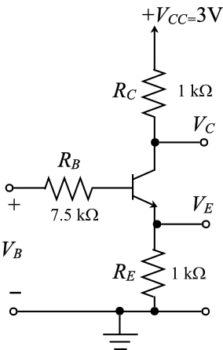

Calculate the and  .
.
Rearrange equation (1) and (2).
And
Consider the value of.
The current through the voltage divider is 0.1 mA.
…… (1)
The voltage across base is, …… (2)
Calculate the and .
Rearrange equation (1) and (2).
And
Calculate the Thevinen’s resistance.
The Thevinen’s equivalent circuit is shown in Figure 2.

Figure 2
Consider the value of
Apply Kirchhoff’s voltage law to the input.
Therefore, the collector current is .
Calculate the collector voltage.
Therefore, the collector voltage is.